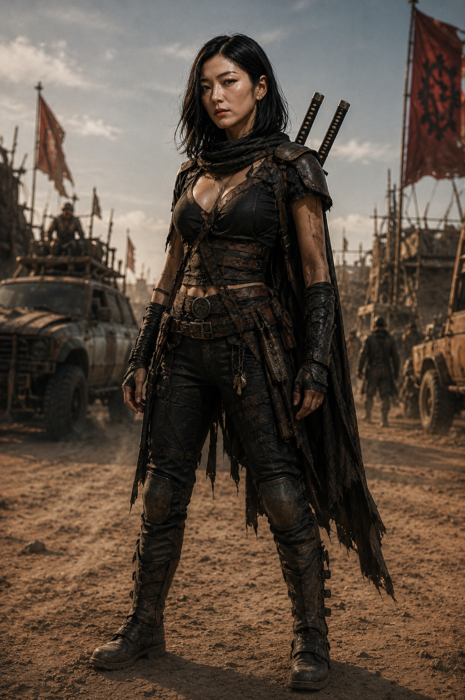

Britney ConnorFORMAÇÃO H // PRESENTE
Mark, você viu meus óculos? Juro que estavam na mesa antes da reunião.
CANAL HELLSINGS // CONVÍVIOASSEMBLE // POSTS DOS PERSONAGENS
Nem toda mensagem pede uma rota. Algumas só procuram um par de óculos, uma caneca inteira ou alguém disposto a responder.
Mark, você viu meus óculos? Juro que estavam na mesa antes da reunião.
CANAL HELLSINGS // CONVÍVIOQuem deixou uma caneca em cima do mapa de rotas? O mapa não é uma mesa de apoio.
CANAL HELLSINGS // CONVÍVIOEu deixei. A mesa auxiliar estava ocupada com o mapa menor.
Jack, os dois mapas ficam na mesa de mapas. A caneca fica na mesa auxiliar.
Entendido. A caneca já está a salvo da geografia.
A mesa perto da janela está livre para o almoço. Só não sentem na cadeira da ponta; ela está esperando um conserto.
CANAL HELLSINGS // CONVÍVIOEssa cadeira está esperando conserto desde ontem.
Desde ontem ela está esperando que alguém pare de sentar nela.
Vou avisar o turno. E prender um aviso na cadeira.

O aviso sobre a revisão dos rádios continua preso no quadro. Já foi lido por todos?
CANAL HELLSINGS // CONVÍVIOLi. Os rádios do corredor também entram?
Todos, inclusive o que está desligado desde terça.
Esse é meu. Vou levar depois do briefing.
Quem mudou a caixa de ferramentas de prateleira? Passei dez minutos procurando exatamente onde eu mesmo a guardei.
CANAL HELLSINGS // CONVÍVIOEla está na prateleira marcada “ferramentas”.
Eu vi a placa. Estava procurando a caixa, não a categoria.
Da próxima vez, procura pelo barulho. Você sempre deixa uma chave cair.
Não, Brit. Não os vi desde a reunião.
Brit, eles estão no alto da sua cabeça.
Agora eu vi. Mark, pode retirar a busca oficial.